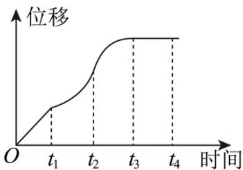

深圳中学 2024 级高二数学周测（1）
一、选择题：本题共8小题，每小题5分，共40分.在每小题给出的四个选项中，只有一个选项是正确的.
1. 一辆汽车在笔直的公路上行驶，位移关于时间的函数图象如图所示，给出下列四个结论：
①汽车在 \([0,t_{1}]\) 时间段内每一时刻的瞬时速度相同；
②汽车在 \([t_{1},t_{2}]\) 时间段内不断加速行驶；
③汽车在 \([t_{2},t_{3}]\) 时间段内不断减速行驶；
④汽车在 \(t_{2}\) 时刻的瞬时速度小于 \(t_{4}\) 时刻的瞬时速度.

其中正确结论的个数有（） A. 1 个
B. 2 个
C. 3 个
D. 4 个
2. 函数 \(f(x) = x^{2} - x\) 在区间[1,3]上的平均变化率为（）
A. 6
B. 3
C. 2
D. 1
3. 若函数 \(f(x)\) 的导函数 \(f'(x)\) 存在，且 \(\lim_{\Delta x \to 0} \frac{f(1 - \Delta x) - f(1)}{2\Delta x} = 4\) ，则 \(f'(1) = (\quad)\)
A. -2
B. 2
C. -8
D. 8
4. 函数 \(f(x)\) 的导函数 \(f'(x)\) ，满足关系式 \(f(x)=x^{2}+2xf'(2)-\ln x\) ，则 \(f'(2)\) 的值为（）
A. \(-\frac{7}{2}\)
B. \(\frac{7}{2}\)
C. \(-\frac{1}{2}\)
D. \(\frac{1}{2}\)
5. 点 \(P\) 在曲线 \(y = x^3 - x + \frac{2}{3}\) 上，设曲线在点 \(P\) 处切线的倾斜角为 \(\alpha\) ，则角 \(\alpha\) 的取值范围是（）
A. \(\left[0, \frac{\pi}{2}\right)\)
B. \(\left[0, \frac{\pi}{2}\right) \cup \left(-\frac{\pi}{2}, 0\right)\)
C. \(\left[\frac{3\pi}{4}, \pi\right)\)
D. \(\left[0, \frac{\pi}{2}\right) \cup \left[\frac{3\pi}{4}, \pi\right)\)
6. 若点 \(P\) 是曲线 \(y = \ln x - x^2\) 上任意一点，则点 \(P\) 到直线 \(l: x + y - 4 = 0\) 距离的最小值为（）
A. \(\frac{\sqrt{2}}{2}\)
B. \(\sqrt{2}\)
C. \(2\sqrt{2}\)
D. \(4\sqrt{2}\)
7. 函数 \(y = f(x)\) 的导数 \(y = f'(x)\) 仍是 \(x\) 的函数，通常把导函数 \(y = f'(x)\) 的导数叫做函数的二阶导数，记作 \(y = f''(x)\) ，类似地，二阶导数的导数叫做三阶导数，三阶导数的导数叫做四阶导数……一般地， \(n - 1\) 阶导数的导数叫做 \(n\) 阶导数，函数 \(y = f(x)\) 的 \(n\) 阶导数记为 \(y=f^{(n)}(x)\) ，例如 \(y=e^{x}\) 的n阶导数 \((e^{x})^{(n)}=e^{x}\) 。若 \(f(x)=xe^{x}+\cos2x\) ，则 \(f^{(50)}(0)=(\quad)\)
A. \(50 - 2^{50}\)
B. 50
C. 49
D. \(49 + 2^{49}\)
8. 已知直线 \(y = kx + b\) 既是曲线 \(y = \ln x\) 的切线，也是曲线 \(y = -\ln (-x)\) 的切线，则（）
A. \(k = \frac{1}{\mathrm{e}}, b = 0\)
B. \(k = 1, b = 0\)
C. \(k = \frac{1}{\mathrm{e}}, b = -1\)
D. \(k = 1, b = -1\)
二、多选题：本题共3小题，每小题6分，共18分.在每小题给出的四个选项中，有多项符合题目要求.全部选对的得6分，部分选对的得部分分，选对但不全的得部分分，有选错的得0分.
9. 下列求导运算正确的是（）
A. \((\ln7)' = \frac{1}{7}\)
B. \([(x^{2}+2)\sin x]' = 2x\sin x + (x^{2}+2)\cos x\)
C. \(\left(\frac{x^{2}}{\mathrm{e}^{x}}\right)^{\prime}=\frac{2x-x^{2}}{\mathrm{e}^{x}}\)
D. \([\ln(3x+2)]'=\frac{1}{3x+2}\)
10. 已知定义在 \(R\) 上的偶函数 \(f(x)\) 满足 \(f(0) = 2, f(3 - x) + f(x) = 1\) ，设 \(f(x)\) 在 \(R\) 上的导函数为 \(g(x)\) ，则（）
A. \(g(2025) = 0\)
B. \(g\left(\frac{3}{2}\right) = \frac{1}{2}\)
C. \(g(x + 6) = g(x)\)
D. \(\sum_{n=1}^{2025} f(n) = 1011\)
11. 已知定义在 \(\mathbf{R}\) 上的函数 \(f(x), g(x)\) 的导函数分别为 \(f'(x), g'(x)\) ，且 \(f(x) = f(4 - x)\) ， \(f(1 + x) - g(x) = 4, f'(x) + g'(1 + x) = 0\) ，则（）
A. \(g(x)\) 关于直线 \(x = 1\) 对称
B. \(g'(3) = 1\)
C. \(f'(x)\) 的周期为4
D. \(f'(n) \cdot g'(n) = 0 (n \in Z)\)
三、填空题：3 小题，每小题 5 分，共 15 分.
12. 写出一个同时具有下列性质①②③的函数 \(f(x)\) : ____.
① \(f(x_{1}x_{2})=f(x_{1})f(x_{2})\) ; ②当 \(x\in(0,+\infty)\) 时， \(f'(x)>0\) ; ③ \(f'(x)\) 是奇函数.
13. 若曲线 \(y = (x + a)e^{x}\) 有两条过坐标原点的切线，则 \(a\) 的取值范围是 ____.
14. 已知函数 \(f(x) = |e^x - 1|, x_1 < 0, x_2 > 0\) ，函数 \(f(x)\) 的图象在点 \(A(x_1, f(x_1))\) 和点 \(B(x_2, f(x_2))\) 的两条切线互相垂直，且分别交 \(y\) 轴于 \(M\) ， \(N\) 两点，则 \(\frac{|AM|}{|BN|}\) 取值范围是 ____.
答题卡
班级____ 姓名____ 分数____
| 选择题 | 多选题 | |||||||||
| 1 | 2 | 3 | 4 | 5 | 6 | 7 | 8 | 9 | 10 | 11 |
12. ____ 13. ____ 14. ____
四、解答题：本题共2小题，共27分. 解答应写出必要的文字说明、证明过程或演算步骤.
15. 求下列函数的导数:
(1) \(y = \mathrm{e}^{-x}(x + 1)^{2};\)
(2) \(y = \cos(3x - 1) - \ln(-2x + 1);\)
(3) \(y = \sin 2x + \cos ^{2} x;\)
(4) \(y = \frac{\sqrt{2x - 1}}{x}.\)
(5) \(y = e^{x}\sin x - \cos x\)
\[(6) y = \tan x + \ln (- x)\]
(7) \(y = x - \sin \frac{x}{2} \cos \frac{x}{2}\)
(8) \(y = \frac{\ln(1 - x)}{\mathrm{e}^x}\)
16. 已知函数 \(F(x) = \mathrm{e}^{x - 1} + \frac{1}{3} x\) ， \(G(x) = -x + m\sin x (m \neq 0)\) .
(1)求函数 \(F(x)\) 图象在x=1处的切线方程.
(2)若对于函数 \(F(x)\) 图象上任意一点处的切线 \(l_{1}\) ，在函数 \(G(x)\) 图象上总存在一点处的切线 \(l_{2}\) ，使得 \(l_{1} \perp l_{2}\) ，求实数m的取值范围.